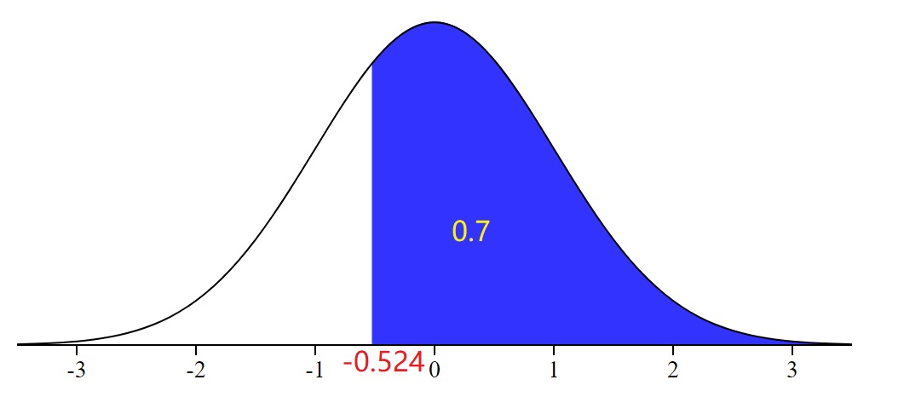
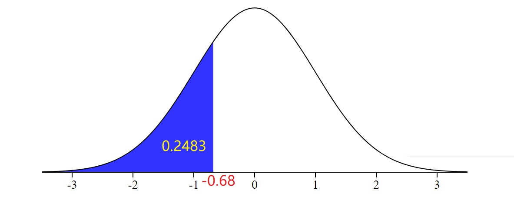

|
Please show your work before checking the answer and explanations.
An Important Tip. Please draw a density curve and label all given in information on the curve before use the standard normal distribution table to find answers for any normal distribution related problems.
Problem 1. Use the standard normal distribution to find P(0 < z < 2.25).
A) 0.8817
B) 0.5122
C) 0.4878
D) 0.7888
View Answer
Ans : C
Explanation: The question uses the standard normal distribution, therefore the mean is 0, the standard deviation is 1, the lower bound is 0 and the upper bound is 2.25. On the TI-84 use normalcdf(0,2,25,0,1), which gives you an answer of C.
Problem 2. Use the standard normal distribution to find P(z < -1.33).
A) 0.7888
B) 0.0606
C) 0.0918
D) 0.9809
View Answer
Ans : C
Explanation: The question uses the standard normal distribution, therefore the mean is 0, the standard deviation is 1. The lower bound is not specified, so it includes all values to the left of the upper bound. On the TI-84 calculator this is represented by -1E99. The upper bound is given and is -1.33. On the TI-84 use normalcdf(-1E99,-1.33,0,1), which give you an answer of C.
Problem 3. The area that lies to the left of 1.13
A) 0.8907
B) 0.8708
C) 0.8485
D) 0.1292
View Answer
Ans : B
Explanation: The question uses the standard normal distribution, therefore the mean is 0, the standard deviation is 1. The lower bound is specified as all values to the left of 1.13. On the TI-84 calculator this is represented by -1E99. The upper bound is given and is 1.13. On the TI-84 use normalcdf(-1E99,1.13,0,1), which give you an answer of B.
Problem 4. Find the z-score for which the area under the standard normal curve to its left is 0.96
A) 1.75
B) -1.38
C) 1.82
D) 1.03
View Answer
Ans : A
Explanation: The question uses the standard normal distribution, therefore the mean is 0, the standard deviation is 1. On the TI-84 calucular use invNorm to find the area under the standard normal curve. InvNorm(0.96,0,1), this will give you the bound from -1E99 to the upper limit for the area that equals 0.96, therfore A is the answer.
Problem 5. Find a value of the standard normal random variable z, called z0, such that P(z ≥ z0) = 0.70.
A) -0.47
B) -0.98
C) -0.81
D) -0.52
View Answer
Ans : D
Explanation: The standard normal distribution gives the area to the left tail. We are given that the right tail area is 0.7. The left tail area is 1 - 0.7 = 0.3. From the normal table, we can see that the left tail area 0.3 corresponds to a z-value that is approximately -0.52.

Problem 6. In Standard normal distribution, the value of median is ___________
A) 1
B) 0
C) 2
D) Not Fixed
View Answer
Ans : B
Explanation: For a standard normal distribuation the median is equal to the mean, therefore B is the correct answer.
Problem 7. To the nearest whole number, what percentile is associated with z = -.68?
A) 10th
B) 40th
C) 50th
D) 25th
View Answer
Ans : D
Explanation: For a standard normal distribution the percentile -0.68 corresponds to a left tail area 0.2483 which is close to 0.25, therefore the answer is D.

Problem 8. Find the area under the standard normal curve to the left of z = 1.5.
A) 0.0668
B) 0.4332
C) 0.9332
D) 0.4666
View Answer
Ans : C
Explanation: The question uses the standard normal distribution, therefore the mean is 0, the standard deviation is 1. The area includes all values to the left of 1.5. On the TI-84 use normalcdf(-1E99,1.5,0,1), which give you an answer of C.

Problem 9. Find the z value that corresponds to the given area.

A) 0.57
B) 0.27
C) -0.79
D) 0.44
View Answer
Ans : A
Explanation: We are given the area of 0.2157 and the lower bound of 0. The area between negative infinity and 0 is 0.5. Since Z score is all of the area to the left of the score. In this case, the area is 0.5+0.2157=0.7157. Use invnorm(0.7157,0,1) to get a z score of 0.57.
Problem 10. Find the z value that corresponds to the given area.

A) 0.07
B) -1.46
C) 1.46
D) 1.23
View Answer
Ans : C
Explanation: You can use a TI calculator or simply use the standard normal distribution table to find the z-score.
Problem 11. Find the z value that corresponds to the given area.Given IQ scores are approximately normally distributed with a mean of 100 and standard deviation of 15, the proportion of people with IQs above 130 isapproximately:
A) 95%
B) 68%
C) 5%
D) 2.5%
View Answer
Ans : D
Explanation: With a mean of 100 and a standard deviation of 15, one 130 is two deviations. Anyone above 130 would be greater than 2 standard deviations. With the 68-95-99.7 rule, we know the proportion of anything two standard deviations in either direction is 5%. Since we only want the right side(+2 standard deviations), it is half of the 5% and the answer is D. The could also be solved by finding the Z score: (130-100)/15=2, P(Z>2) and using invnorm(2.5,1E99,0,1).
Problem 12. Provided that the ACT is reasonably normally distributed with a mean of18 and standard deviation of 6, determine the proportion of students with a 33 or higher.
A) 0.0062
B) 0.0109
C) 0.0124
D) 0.0217
View Answer
Ans : A
Explanation: First, find the Z score: (33-18)/6=2.5. P(Z>2.5)=0.0062 using the normal table or TI command invnorm(2.5,1E99,0,1).
Problem 13. For a population of giraffes, the heights are measured. The sample mean is 16.5 ft; the sample standard deviation is 3.8. What percentage of giraffes are taller than 20 ft.
A) 8%
B) 15%
C) 18%
D) 21%
View Answer
Ans : C
Explanation: 𝑍= (20−16.5)/3.8 = 0.92. 𝑃(𝑍> 0.92) = 1 − P(z < 0.92) = 1 - 0.8212 = 0.1788.
Problem 14. IQ scores are normally distributed with mean 100 andstandard deviation 15. What is the IQ scores that correspond to the 85 percentile?
A) 115.6
B) 120.3
C) 126.6
D) 146.2
View Answer
Ans : A
Explanation: The z-score for 0.85 is around 1.04. So the 85 percentile is 100 + (1.04)(15) = 115.6
Problem 15. Assume that the heights of women are normally distributed with a mean of 64.9 inches and a standard deviation of 1.6 inches. Find Q3, the third quartile that separates the bottom 75% from the top 25%.
A) 63.8
B) 66.0
C) 66.9
D) 66.7
View Answer
Ans : B
Explanation: Q3 is the area under the curve with an area of 0.75. Using the normal table or the TI command Invnorm(0.75,0,1) to obtain z = 0.675. Recall that the z-score transformation has form 0.675=(x-64.9)/1.6. Next, solve for x=65.98, so the answer is B.
|